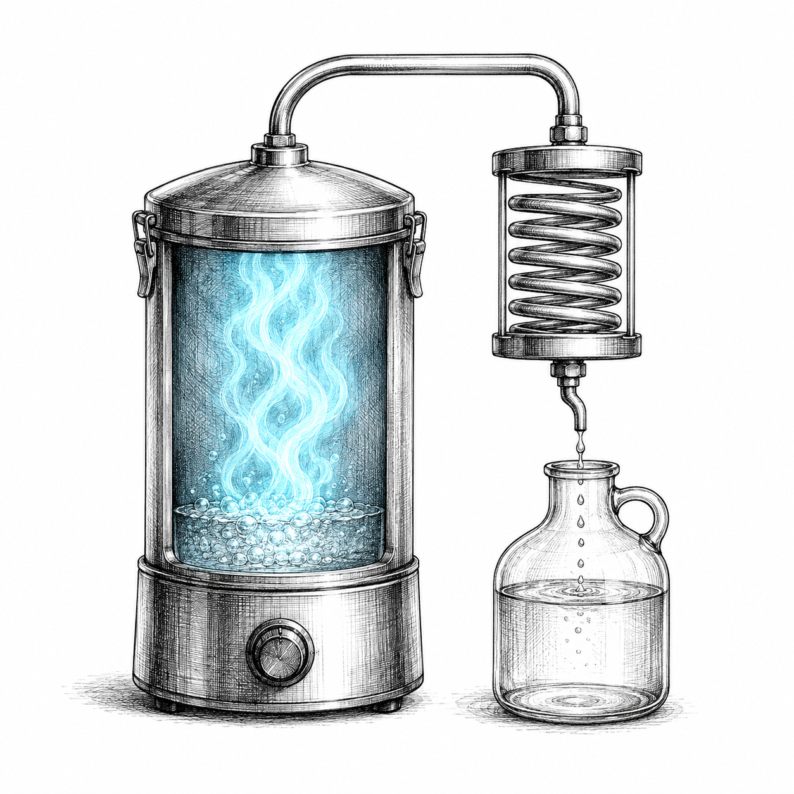
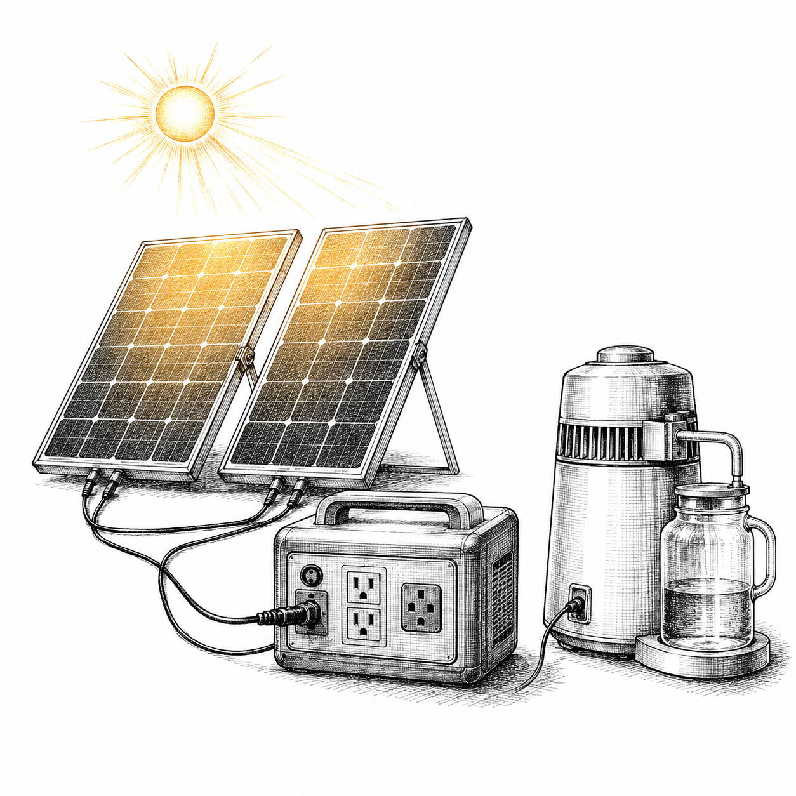
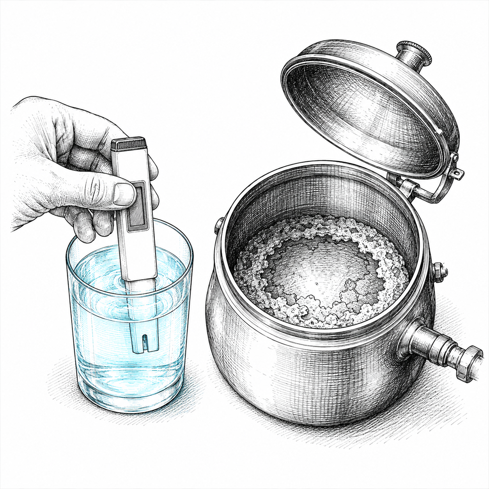

Water, off grid, forever
Endless Clean Water
From 2 Solar Panels
A countertop distiller boils your worst water into steam, leaves the salt, lead, metals, nitrates, germs, and forever chemicals behind in the pot, then cools the steam back into pure water. A two dollar carbon pouch catches the one thing that sneaks through. Two solar panels run the whole thing, one clean gallon at a time.
What you buy
| Countertop stainless distiller, 750 watts | about 66 dollars |
| Two 400 watt solar panels | about 495 dollars |
| Portable power station, see sizing | varies |
| TDS dissolved solids meter | about 14 dollars |
| Activated carbon distiller sachets | about 15 dollars |
On grid you can skip the panels and station and run the still off a wall outlet for well under a dollar a gallon. The solar path is for when the tap stops.
Power station sizing
- Output: at least 1000 watts continuous, or it cannot run a 750 watt still.
- Battery: about 3.5 thousand watt hours to finish a full gallon on battery alone.
- Run it in daylight straight off the panels and a smaller, cheaper station is plenty, since the battery only covers passing clouds.
- Check the solar input rating, not just the outlet rating, so it can take both panels.

The steam gate: only water leaves as vapor, everything heavy stays in the pot.

Two 400 watt panels and a power station run the still with no grid.
Build and run it
- Buy the still, two 400 watt panels, and a power station. Every connection stays a normal plug.
- If your water is muddy, pour it through a cloth or coffee filter first so grit does not cake the element.
- Fill the pot in the evening from whatever source you have.
- In the morning, plug the still into the station and press the button when sun hits the panels.
- By early afternoon a full gallon of pure water sits in the jug.
- Leave the carbon sachet in place at the spout to catch volatile chemicals.
- Empty the gray crust and give the pot a vinegar rinse when it builds up.
- Test it: dip the TDS meter in your tap, then in the distilled water, and watch the number fall to single digits.
Why it works
- Water boils at 212 F. Salt needs about 2,500 F and lead past 3,000 F, so they cannot ride the steam.
- Benzene and volatile chemicals boil at 176 F, below water, so they DO sneak through. That is what the carbon pouch is for.
- One gallon takes the 750 watt still about 4 to 5 hours, roughly 3.4 thousand watt hours of energy.
- Tap water often reads 150 to 400 on a TDS meter. Distilled reads single digits, near zero.
- Plan on one gallon of drinking water per person per day.

The receipt: the meter reads near zero, and the gray crust is everything you did not drink.
Read before you build
- Never cut, splice, or rewire the machine or its cord. Improvised direct wiring is how house fires start.
- Everything stays store bought and plugs into normal outlets.
- Boiling alone concentrates lead and nitrates. Distilling leaves them in the pot, which is the point, so never drink the leftover pot water.
- Distilled water is safe to drink. It tastes flat because the gases are gone. Swirl the glass or add a pinch of mineral salt.
- A still is slow, about a gallon a day. This is drinking and cooking water, not showers and laundry.
Keep going
Watch the full build: youtu.be/7w1LaswQTAQ
More free sheets: sketchysurvival101.com/free
Subscribe so the day the tap stops does not catch you flat footed.